01
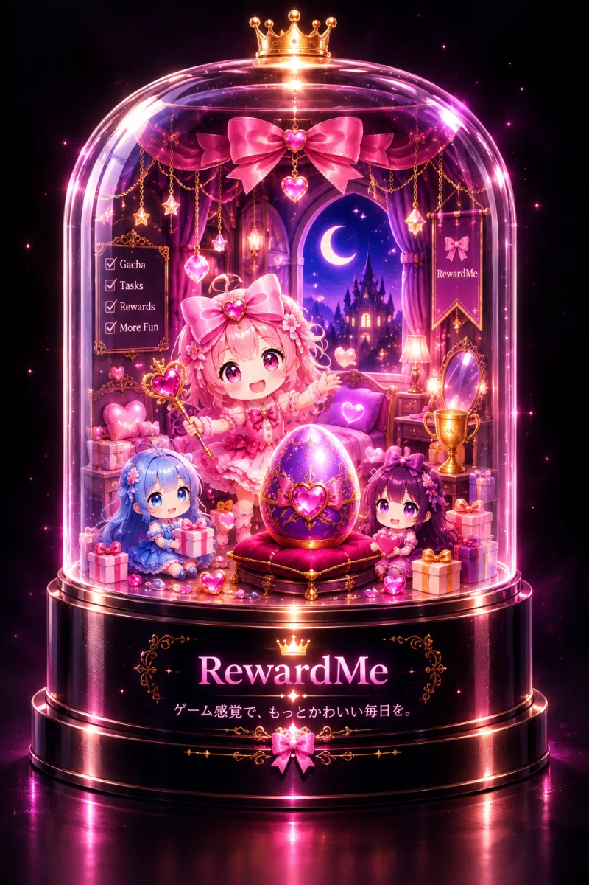
RewardMe01 / PERSONAL PROJECT
RewardMe
日々のタスクに、
続けたくなる理由を。
タスクの完了を、育成・ガチャ・お部屋づくりのごほうびにつなげるタスク管理アプリ。日常の小さな達成を、次の行動につなげる個人開発。
Ruby on Rails / Hotwire / Stimulus / PostgreSQL
プロジェクトビジュアルを見る ＋

WEB · AI · CREATIVE DEVELOPMENT
考えを、使えるかたちへ。
つくるだけで終わらない。
人が使い、理解できる体験まで。
THE APPROACH
課題を整理し、設計し、動くものにする。
Webアプリ、AI、サイト、映像。
目的に合わせて技術を選び、かたちにしています。
01 / SELECTED WORK
個人開発の5作品。
課題と、実装と、その先の体験。

RewardMe01 / PERSONAL PROJECT
日々のタスクに、
続けたくなる理由を。
タスクの完了を、育成・ガチャ・お部屋づくりのごほうびにつなげるタスク管理アプリ。日常の小さな達成を、次の行動につなげる個人開発。
Ruby on Rails / Hotwire / Stimulus / PostgreSQL
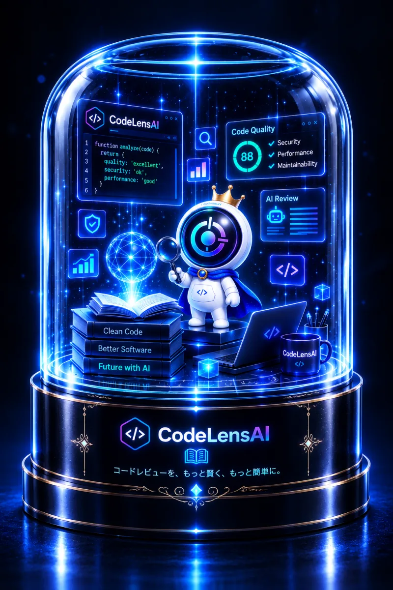
CodeLensAI02 / PERSONAL PROJECT
コードの差分を、
理解と改善につなぐ。
Claude APIを活用したコードレビュー支援。差分の解析と改善提案を通して、ソフトウェアを理解するための入口をつくる。
Laravel / Claude API / PostgreSQL / Docker

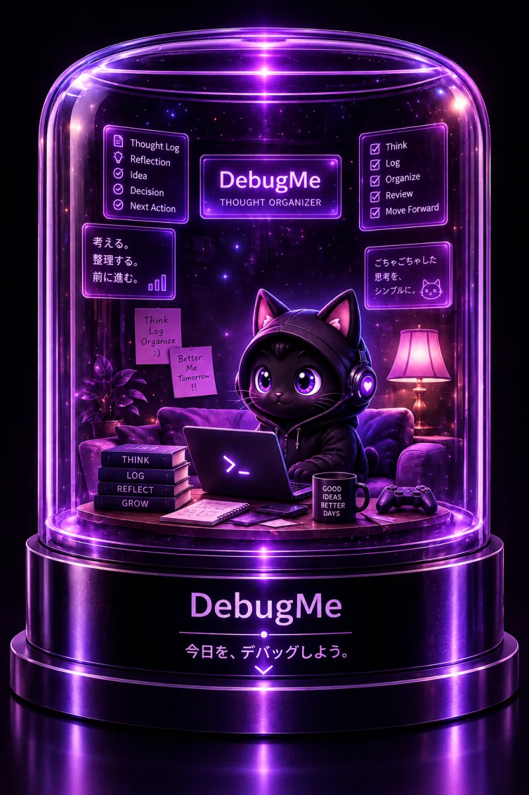
DebugMe03 / PERSONAL PROJECT
考えの詰まりを、
言葉にする。
悩みや考えをログに変換する思考整理アプリ。SSEによるAIのストリーミング応答で、対話の流れを途切れさせない。
Ruby on Rails / Claude API / SSE / Hotwire
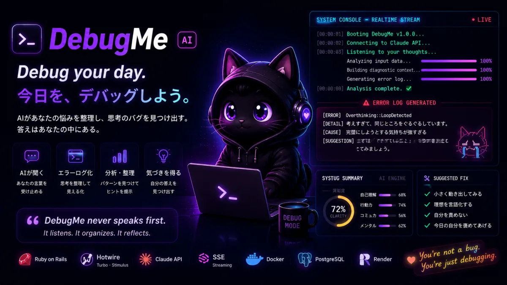
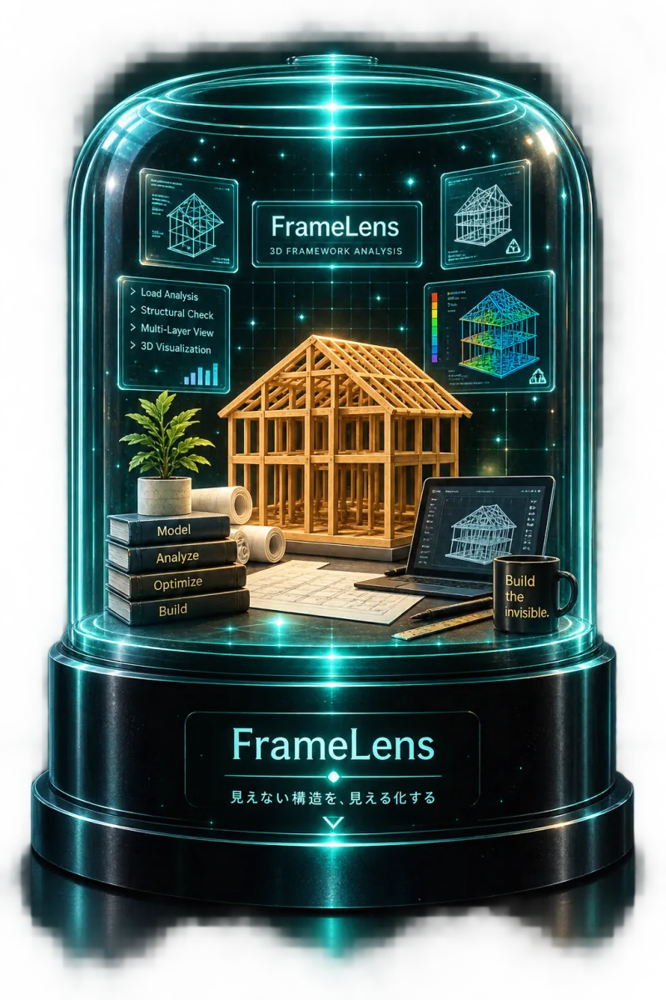
FrameLens04 / PERSONAL PROJECT
見えない構造に、
輪郭を与える。
C++をWebAssembly化し、ブラウザで描画する可視化の個人開発。Webとグラフィックスの境界を探索する。
C++ / OpenGL / WebAssembly / WebGL2 / Emscripten
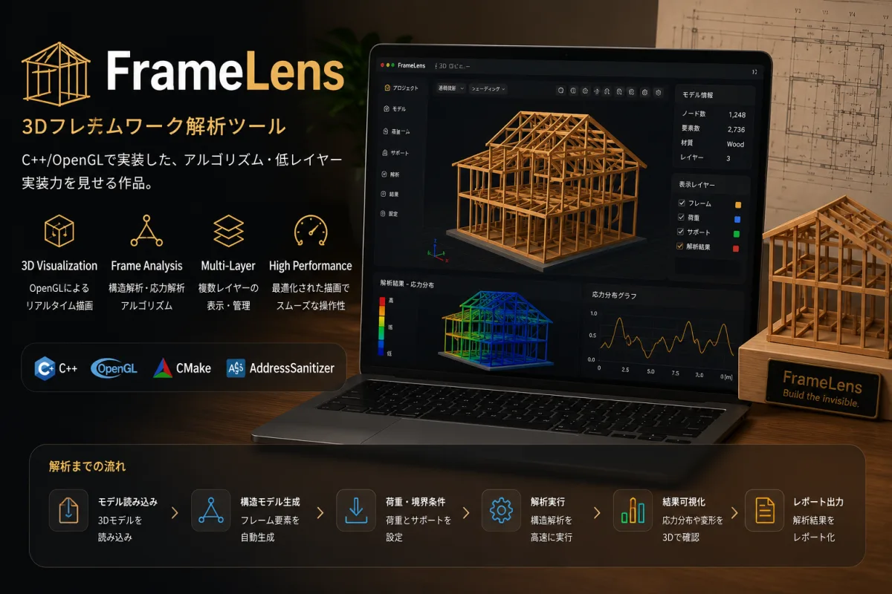
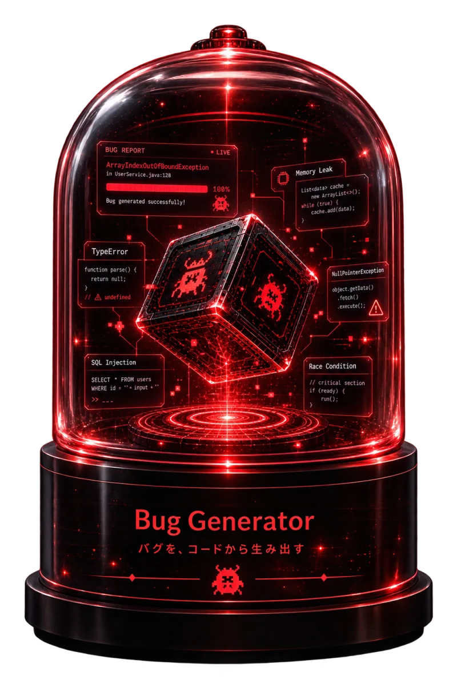
Bug Generator05 / PERSONAL PROJECT
エラーを、
学びの入口に。
バグやエラーを遊びに変える実験的なアプリ。RailsとStimulusを組み合わせ、動的な体験をつくる。
Ruby on Rails / Hotwire / Stimulus
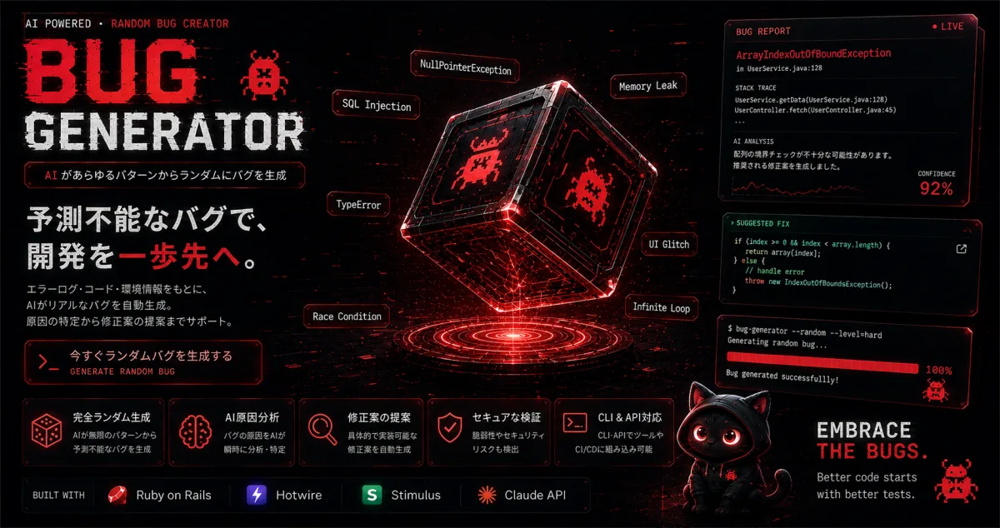
WEB DESIGN & DEVELOPMENT
株式会社 MizeLyでのWeb制作。
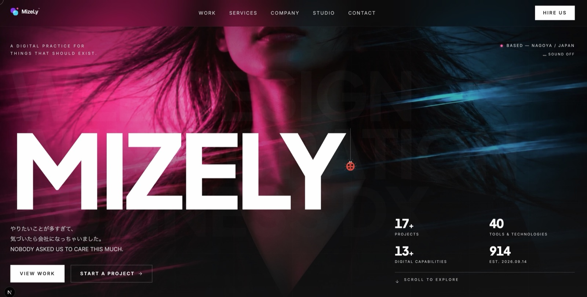
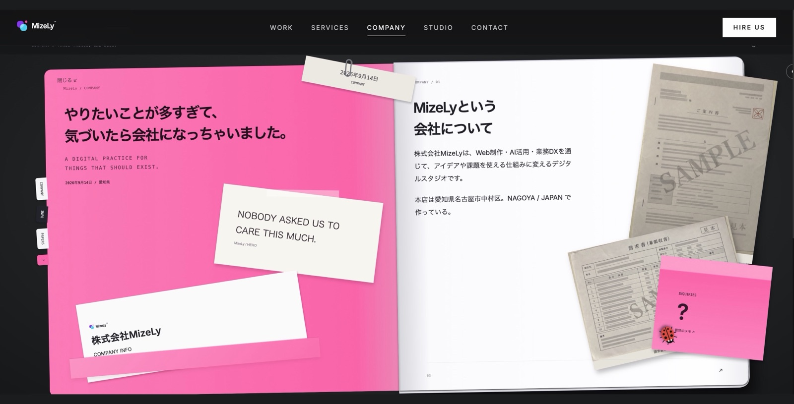
MIZELY / 自社サイト
担当：Webデザイン・開発。
映像とタイポグラフィを組み合わせたコーポレートサイト。
Next.js / React / TypeScript / Tailwind CSS
GSAP / Motion / WebGL
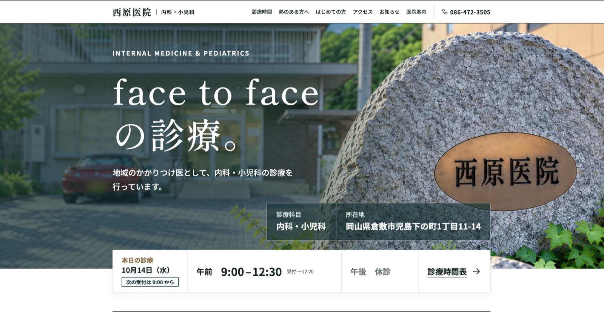
WEB DESIGN & DEVELOPMENT
診療時間・休診情報の表示、スマートフォン対応、SEOの基本設定・構造化データを実装。必要な情報へ迷わずたどり着けるサイトを目指して。
Astro / HTML / CSS / JavaScript
公開準備中02 / PROFESSIONAL PRACTICE
株式会社 MizeLyでの制作。
情報を、伝わる体験に。
AI VIDEO & VISUAL STORYTELLING
台本作成から映像・音声・音楽素材の制作、編集まで。生成AIと映像編集ソフトを組み合わせ、伝えたい内容を一本の動画に。
Veo / Runway / Sora / ElevenLabs / Suno / Udio
DaVinci Resolve / Adobe After Effects
BUSINESS DX / EVIDENCE ENGINE
公告の原本をもとに、参加条件をひとつずつ照合。判定の根拠を、資料のページと条文までたどれる仕組みに。
Python / SQLite / CLI
v0.1 完成・非公開03 / THE PERSON BEHIND THE WORK
Web development. AI. Visual storytelling.
好奇心を、
動くものに。
Web、AI、デザイン、映像。
領域を決めずに、考え、つくり、試す。
思いついたことを、実際に触れられる体験へ。
株式会社 MizeLy 代表取締役。
Webサイト制作・アプリケーション開発・映像制作に取り組んでいます。
LET’S MAKE SOMETHING MEANINGFUL
制作・開発についてのご相談は、こちらから。
mize@mizely.jp ↗